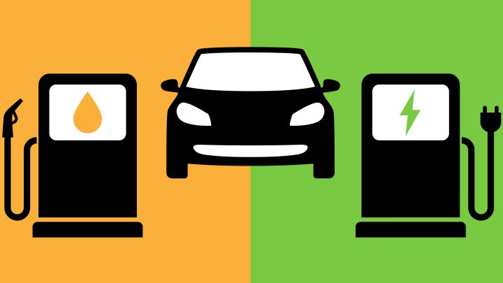

Comparación del coche eléctrico y el coche de gasolina
Cada tipo de coche tiene sus puntos de vista buenos y sus puntos de vista malos, pero la pregunta es, ¿que coche es es más recomendable?. Depende como lo quieras ver, si tienes un coche de gasolina y te quieres comprar uno eléctrico, ¡hazlo!, el coche eléctrico no produce contaminación ni atmosférica ni acústica, ya que el coche eléctrico no produce el humo de la combustión que se produce en el coche de gasolina, ese humo que desprende el coche de gasolina perjudica a la atmósfera y al medio ambiente. Pero a la hora de comprarlo, ¿cúal es más recomendable?. Va a ser más económico para todo comprador el coche de gasolina, en cambio el coche eléctrico va a ser más caro, ya que es más moderno y usa mejores componentes que el coche de gasolina,de más valor, pero de mejor funcionamiento. En conclusión es mejor comprar o usar de primeras el coche de gasolina si va a ser tu primer coche en propiedad, y cuando pasen unos cuantos años comprar un coche eléctrico ya que te vas a ayudar a tí y al medio ambiente.
